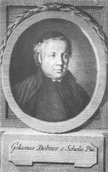
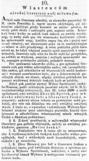
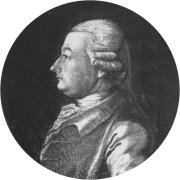
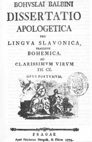
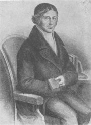
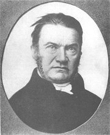
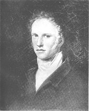
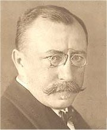
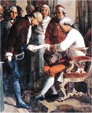
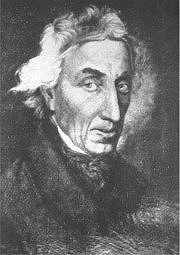

Gelasius Dobner na rytinì Jana Balzera vytvoøené podle obrazu J.Q.Jahna
|
OBROZENECKÁ VÌDA
První fáze národního obrození byla ve znamení vìdy, pøedevším dìjezpytu, jazykovìdy a literární historie. Osvícenští vìdci jako Dobner nebo Dobrovskı se sna�ili hlavnì o popis skuteènosti, druhá generace vìdcù (Jungmann, Palackı...) u� vìdu vyu�ívala pro národní zájmy a pøizpùsobovala realitu svému obrazu. Vynikajících vısledkù dosáhli odborníci na pøírodní vìdy – matematik Bernard Bolzano (1781-1848), kterı prı pomocí teorie mno�in dokázal existenci Bo�í, a biolog Jan Evangelista Purkynì (1787-1869). Rozvíjí se také folkloristika, hlavnì sbìratelství lidové slovesnosti.
První vìdecké instituce mìly soukromı charakter. V roce 1774 vznikla Soukromá spoleènosti nauk (pozdìji Èeská spoleènost nauk (1784), ještì pozdìji Královská èeská spoleènost nauk (1790)). Èeské muzeum (pozdìji Muzeum Království èeského, dnes Národní muzeum) bylo zalo�eno roku 1818. V roce 1831 vznikl pøi muzeu spolek Matice èeská, kterı podporoval èeské písemnictví. Zaèaly vycházet první odborné èasopisy – Prager gelehrte Nachrichten (1771), Krok (1821-1840), Èasopis Èeského muzea (od roku 1827, pod rùznımi názvy do souèasnosti) a �iva.
|

Ohlášení vzniku Matice èeské
|
Gelasius Dobner (1719-1790)
Dobner se narodil v Praze a také zde zemøel. Tento èlen piaristického øádu je pova�ován za prvního èeského osvícence a zakladatele moderního dìjepisectví. Vydal Hájkovu kroniku a øadu latinskıch pramenù k èeskım dìjinám. Psal latinsky.
|
Gelasius Dobner: Hájkova Kronika èeská
Dobner byl povìøen vydáním latinského pøekladu Hájkovy Kroniky èeské. Úkolu se zhostil velmi zodpovìdnì a v kritickém komentáøi srovnal Hájkovy informace s dochovanımi listinami a dalšími prameny. Pøesto�e jeho vydání Hájkovy kroniky sahalo pouze do roku 1198, zabralo celıch 6 svazkù (zbytek zùstal v rukopise). V 70. letech 18. století ovšem nebylo mnoho lidí, kteøí by pøijali myšlenku, �e pøíchod praotce Èecha patøí do svìta bájí, nikoliv do dìjepisu...
|
Kdy vyšla Hájkova kronika?
Mù�eme jejímu autorovi vytıkat, �e si nepoèínal jako objektivní historik? Proè?
Ovìøuješ si získané informace, nebo všemu slepì vìøíš jako ètenáøi Hájkovy kroniky?
|
František Martin Pelcl
(1734-1801)

Pelcl se narodil v Rychnovì nad Knì�nou a zemøel v Praze. Studium práv nedokonèil, proto�e zaèal pracovat jako vychovatel a knihovník u hrabìte Nostice, aby u�ivil rodinu. V 80. letech byl cenzorem èeskıch knih a v roce 1793 se stal prvním profesorem èeské øeèi a literatury na pra�ské univerzitì.
|
František Martin Pelcl
Z Pelclova díla je nejvıznamnìjší Nová kronika èeská (mohly vyjít pouze 3 díly do roku 1378). Èesky napsal ještì soubor �ivotopisù Vyobrazení uèencù a umìlcù v Èechách a na Moravì. Uèebnice Základy gramatiky èeské a Rozmluva o èeské literatuøe jsou v nìmèinì. Pelcl vydal Balbínovu Obranu a Pøíhody Václava Vratislava z Mitrovic. Pamìti, ve kterıch se dívá kriticky na éru Josefa II., vyšly a� po autorovì smrti.
Josef II. se stal hrdinou èetnıch povìstí. Znáš nìkterou z nich?
|

Pelcl vydal Balbínovu Obranu v latinì sto let po jejím napsání, èeskı pøeklad vyšel o dalších sto let pozdìji.
|
Josef Dobrovskı (1753-1829)
Dobrovskı se narodil v Ïarmotech u Rábu a zemøel v Brnì. Vystudoval teologii, ale knì�ské dráze se nevìnoval (zùstala mu jen pøezdívka modrı abbé). Marnì usiloval o dùle�itá místa v oborech, kterımi se zabıval. Naštìstí ho finanènì podporoval hrabì Nostic. K pokusùm mladších kolegù o vzkøíšení èeštiny jako plnohodnotného jazyka vìdy i umìní se Dobrovskı stavìl skepticky. Zùstával vìrnı myšlenkám osvícenství a èeštinu pøedevším vìdecky zkoumal. Dobrovskı je pova�ován za otce slavistiky.
Èím se zabıvá slavistika?
Znáš i jiné slavisty?
Podívej se na internetové stránky Ústavu slavistickıch a vıchodoevropskıch studií FF UK.
|
Josef Dobrovskı
Latinskım spisem Základy jazyka staroslovìnského polo�il Dobrovskı základy nové vìdì – slavistice. Jinak psal hlavnì nìmecky: Dìjiny èeské øeèi a literatury (oceòuje veleslavínskou èeštinu, vıvoj jazyka po Bílé hoøe pova�uje za úpadek), Èeská prozódie (prosazuje sylabotónickı systém), Podrobná mluvnice jazyka èeského, Nìmecko-èeskı slovník (2 díly). Zajímal se také o lidovou slovesnost – Èeskıch pøísloví sbírka.
Kdy� Dobrovskı zveøejnil svou sta� Literární podvod, ve které oznaèil Rukopis zelenohorskı za podvrh, jeho� cílem je vytvoøit velebnı obraz èeského dávnovìku podle soudobıch pøání, zaèali ho národní buditelé sdru�ení kolem Jungmanna pova�ovat za odrodilce.
|

Tkadlík: Josef Dobrovskı
Jaké argumenty uvádí Dobrovskı, kdy� oznaèuje rukopisy za nepravé?
|
Josef Jungmann (1773-1847)

Jungmannovım rodištìm byly Hudlice u Berouna, zemøel v Praze.
Vystudoval práva, ale vìnoval se hlavnì pedagogické èinnosti (profesor gymnázia v Litomìøicích a pra�ského Akademického gymnázia, dìkan filozofické fakulty, rektor univerzity).
|
Josef Jungmann
Jungmann psal hlavnì èesky: O jazyku èeském,
O klasiènosti v literatuøe vùbec a zvláštì èeské,
Slovesnost aneb Sbírka pøíkladù s krátkım pojednáním o slohu, Historie literatury èeské (soupis èeské literární produkce od nejstarších dob po souèasnost), Slovník èesko-nìmeckı (5 dílù, 120 000 hesel). Pøekládal z angliètiny (Miltonùv Ztracenı ráj), nìmèiny (Goethùv Heøman a Dorota), francouzštiny (Chateaubriandova Atala), slovanskıch jazykù (Slovo o pluku Igorovì), øeètiny a latiny.
Proè Jungmann napsal toto rozmlouvání?
|
Jungmann je nejdùle�itìjší postavou èeského národního obrození. Podle Jungmanna je podstata národa dána jazykem. Proto se sna�il vzkøísit èeštinu v její bıvalé slávì a vytvoøit z ní jazyk, ve kterém mohou vznikat kvalitní umìlecké i vìdecké texty. Tento program si vzala za svùj nastupující generace preromantikù (Èelakovskı, Kollár, Palackı, Šafaøík...). Jungmann vìøil v pravost Rukopisu královédvorského i zelenohorského a pova�oval je za vrchol èeské literární tvorby.
|
Pavel Josef Šafaøík
(1795-1861)
Šafaøíkovım rodištìm bylo Kobeliarovo na Slovensku, zemøel v Praze. Byl øeditelem srbského gymnázia v Novém Sadì. Díky finanèní podpoøe pøátel se mohl vìnovat slavistickım studiím a pøestìhovat se do Prahy, kde se stal øeditelem univerzitní knihovny.
|
Pavel Josef Šafaøík
Šafaøík napsal sbírku básní Tatranská Múza s lyrou slovanskou. V pojednání Poèátkové èeského básnictví, obzvláštì prozódie (spoleènì s Palackım, 1818) prosazoval èasomìrnou poezii. Vydal slavistické práce Písnì svìtské lidu slovanského v Uhøích, Slovanské staro�itnosti, Slovanskı národopis a nìmecky psané Dìjiny slovanské øeèi a literatury podle všech náøeèí.
|

Šafaøík na daguerrotypu
Co nového ses dozvìdìl/a z tohoto pojednání?
Jsou všechny údaje pravdivé? Jak se to dá ovìøit?
|
František Palackı (1798-1876)
Palackı pocházel z Hodslavic u Nového Jièína a zemøel v Praze. Nejprve se �ivil jako vychovatel, ale roku 1829 byl jmenován oficiálním historiografem Království èeského s úkolem sepsat pìtidílné dìjiny Èech. V roce 1848 pøedsedal Slovanskému sjezdu v Praze, byl poslancem a èelnım pøedstavitelem staroèeského køídla národní strany. Hlásil se k myšlence austroslavismu (zrovnoprávìní slovanskıch národù v rámci habsburské monarchie). Vydával historické prameny (Archiv èeskı, Husovy spisy, dokumenty k husitství a dobì Jiøího z Podìbrad...).
|
František Palackı
Spoleènì s Šafaøíkem napsal pojednání Poèátkové èeského básnictví, obzvláštì prozódie, ve kterém prosazoval èasomìrnou poezii. Byl zakladatelem èeské estetiky (Pøehled dìjin krásovìdy a její literatury, Krásovìda èili O kráse a umìní). Jeho vrcholnım dílem jsou
Dìjiny národu èeského v Èechách a v Moravì, které vycházely nejdøíve nìmecky (1836-67) a od roku 1848 i èesky. Sahají do nástupu Habsburkù na èeskı trùn v roce 1526. Palackı vidí hlavní princip dìjin ve vzájemném stıkání a potıkání èeského národa s nìmeckım. Èeši jsou zde nositeli demokracie, Nìmci naopak pevného feudálního øádu.
Za vrchol èeskıch dìjin pova�uje husitství, po nìm následoval postupnı úpadek. Toto vidìní historie je znaènì poplatné dobovému romantismu.
|

Takto zachytil Palackého malíø Tkadlík v roce 1821.
Jací jsou podle Palackého Slované?
Co tvrdí tento historik o Nìmcích?
Zaujalo tì nìco na této ukázce?
|
Sbìratelství lidové slovesnosti
Lidové písnì byly zaøazovány do dobovıch kancionálù u� v dobách renesance. Zámìrnì zaèal sbírat lidovou slovesnost Jan Amos Komenskı (Pøísloví èili Moudrost starıch pøedkùv za zrcadlo vystavená potomkùm). Vìdecky se touto èinností zabıval Dobrovskı (Èeskıch pøísloví sbírka), kterı sebral i pøísloví ruská a srbská. Sbírání lidové slovesnosti podporovaly i rakouské úøady – Jan Rittersberk (Èeské národní písnì). Èelakovskı uspoøádal Mudrosloví národu slovanského ve pøíslovích a Slovanské národní písnì, mezi nì� propašoval ohlasovou tvorbu vlastní i dalších obrozencù...
Erben (Prostonárodní èeské písnì a øíkadla, Sto prostonárodních pohádek a povìstí slovanskıch v náøeèích pùvodních, Èeské pohádky) a zvláštì Nìmcová (Národní báchorky a povìsti, Slovanské pohádky a povìsti) sebrané texty dodateènì upravovali.
Vıznamné jsou ještì sbírky Františka Sušila (Moravské národní písnì) a Františka Bartoše (Nové národní písnì moravské s nápìvy do textu vøadìnımi, Národní písnì moravské vnovì nasbírané).
|
Jan Jeník z Bratøic
Narozdíl od ostatních sbìratelù lidové slovesnosti Jan Jeník z Bratøic (1756-1845) texty písní neupravoval. Jeho Písnì krátké, v vìtším poètu starodávné lidu obecného èeského... obsahují lidové skladby a� pøekvapivì otevøené.
Èenìk Zíbrt
Èenìk Zíbrt byl vıznamnı historik (Bibliografie èeské historie) a etnograf (Staroèeské vıroèní obyèeje, povìry, slavnosti a zábavy prostonárodní). V roce 1891 zalo�il první národopisnı èasopis Èeskı lid, kterı mapoval lidovou kulturu. Po Zíbrtovì smrti èasopis zanikl, ale v roce 1946 bylo jeho vydávání obnoveno.
|
Znáš nìkterou z lidovıch písní v ukázce v jiném znìní, ne� jak ji zachytil Jan Jeník z Bratøic?
Kolik lidovıch písní umíš zazpívat?
Èím se zabıvá folkloristika, etnografie, národopis, vlastivìda a dialektologie?

Èenìk Zíbrt (1864-1932) vydával i zdánlivì obskurní knihy typu Nápisy ze staroèeskıch štambuchù a památníkù a� do doby probuzenské, Øády a práva starodávnıch pijanskıch cechù a dru�stev kratochvilnıch v zemích èeskıch, Skøítek v lidovém podání staroèeském, Kouzelnı proutek, Virgule, Z kosmetiky staroèeské, Staroèeské umìní kuchaøské, Myslivecké povìry a èáry za starıch èasù v Èechách a desítky dalších.
Co si myslíš o uvedenıch obyèejích?
|
Internetové stránky
Josef Jungmann: Dvojí rozmlouvání o jazyku èeském, O rùznìní èeského písemního jazyka,
O klasiènosti literatury
Palackı: Idea státu rakouského
Palackı: Psaní dne 11. dubna 1848 do Frankfurtu
Zíbrt, �ivotopis
Zíbrt, informace
Tieftrunk: Dìjiny Matice èeské
Hmotozpyt èi luèba, novoèeské chemické názvosloví

Johann Tille: Císaø Leopold II. na zasedání Královské èeské spoleènosti nauk 25. záøí 1791
|
Doporuèená èetba
Aleš, Mikoláš: Špalíèek národních písní a øíkadel, Odeon, Praha 1985
Bolzano, B.: O nejlepším státì, Praha 1981
Èelakovskı, F.L.: Mudrosloví národu slovanského ve pøíslovích
Èeskı lid, Etnologickı èasopis
Dobrovskı, Josef: Èeskıch pøísloví sbírka, Praha 1963
Dobrovskı, J.: Vıbor z díla, Praha 1953
Erben, Karel Jaromír: Prostonárodní èeské písnì a øíkadla (6 svazkù), Panton
Jeník z Bratøic, Jan: Písnì starodávné lidu obecného èeského namnoze nezbedné a pohoršlivé, Ma�a, Praha 1999
Jeník z Bratøic, Jan: Rozmarné písnièky, SNKLU, Praha 1959
Jetmarová, Milena: František Palackı, Praha 1961
Johanides, J.: František Martin Pelcl, Melantrich, Praha 1981
Jungmann, Josef: Pøeklady I (Milton: Ztracenı ráj)
Machovec, Milan: Josef Dobrovskı, Praha 1964
Novotnı, Jan: Pavel Josef Šafaøík, Melantrich, Praha 1971
Obrození národa, Svìdectví a dokumenty, Melantrich, Praha 1979
Palackı, František: Z dìjin národu èeského, SNKLHU, Praha 1957
Plch, Jaromír: Antologie z èeské literatury národního obrození, SPN, Praha 1978
Polišenskı, Illingová: Jan Jeník z Bratøic, Melantrich, Praha 1989
Zíbrt, Èenìk: Staroèeské vıroèní obyèeje, povìry, slavnosti a zábavy prostonárodní, Praha 1889
Zíbrt, È.: Veselé chvíle v �ivotì lidu èeského, Praha 1950
|
Pøiprav si referát o nìkteré z uvedenıch knih nebo internetovıch stránek.

Dobrovskı trpìl chorobou, která poznamenala jeho psychiku, co� je patrné i z obrazu Františka Horèièky.
Velkım úkolem pro vìdce bylo vytvoøit pùvodní èeskou odbornou terminologii. Víš, co je mluno?
|
|